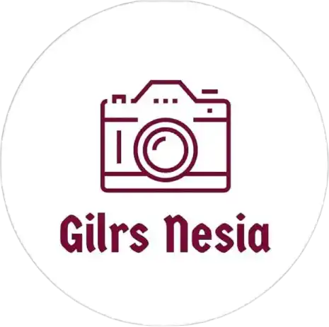

Brand Stories
Girls Nesia, Komunitas Kreatif Visual dan Media Kolaborasi di Bandung

Komunitas Kreatif Visual di Bandung
Girls Nesia merupakan wadah komunitas kreatif dan media kolaborasi visual yang berbasis di Bandung, Indonesia. Komunitas ini mempertemukan fotografer, model, kreator visual, dan penggiat konten dalam berbagai aktivitas yang berkaitan dengan fotografi, pemodelan, dokumentasi, dan jejaring kreatif.
Kehadiran Girls Nesia menjadi bagian dari ekosistem kreatif yang berkembang melalui aktivitas visual dan interaksi langsung antar kreator. Setiap kegiatan dapat menghasilkan karya fotografi, dokumentasi, serta pengalaman kolaboratif yang menjadi bagian dari perjalanan komunitas.
Fotografi dan Pemodelan sebagai Ruang Kolaborasi
Salah satu fokus Girls Nesia adalah fotografi dan pemodelan. Kegiatan hunting foto bersama model lokal memberikan ruang bagi fotografer untuk menghasilkan karya sekaligus membangun hubungan dengan kreator lainnya.
Dalam kegiatan fotografi komunitas, proses kreatif berlangsung secara langsung. Fotografer melakukan pengambilan gambar, model menjadi bagian dari proses visual, sementara kreator lainnya dapat terlibat dalam produksi, dokumentasi, maupun publikasi konten.
Lingkar Kreatif bagi Fotografer dan Konten Kreator
Girls Nesia juga menjadi ruang bagi kreator visual, fotografer, dan konten kreator untuk saling berjejaring serta memperlihatkan karya mereka.
Pertemuan antar kreator dapat membuka kesempatan untuk menghasilkan karya bersama dan membangun portofolio berdasarkan aktivitas nyata. Dokumentasi yang dihasilkan dari kegiatan tersebut juga dapat menjadi arsip visual mengenai perkembangan komunitas kreatif di Bandung.
Girls Nesia dan N2SP
Girls Nesia memiliki keterlibatan sebagai mitra media resmi kegiatan N2SP (Ngariung Sabari Hunting). N2SP menjadi salah satu ruang berkumpul bagi fotografer dan model dalam kegiatan fotografi bersama.
Dalam konteks tersebut, dokumentasi visual menjadi bagian penting untuk merekam aktivitas peserta, interaksi kreator, serta karya yang dihasilkan selama kegiatan berlangsung.
Kehadiran Girls Nesia sebagai media kolaborasi membantu memberikan konteks publikasi terhadap aktivitas komunitas fotografi dan pemodelan yang berlangsung di Bandung.
Dokumentasi sebagai Arsip Aktivitas Komunitas
Bagi komunitas kreatif, dokumentasi tidak hanya berfungsi sebagai materi publikasi. Foto dan video juga dapat menjadi arsip yang merekam siapa yang terlibat, kegiatan yang dilakukan, serta perkembangan jejaring kreatif dari waktu ke waktu.
Aktivitas yang terdokumentasi secara konsisten dapat membentuk jejak digital yang memberikan konteks lebih jelas mengenai keberadaan dan aktivitas sebuah komunitas.
Girls Nesia dalam Ekosistem Kreatif Bandung
Bandung dikenal memiliki ekosistem kreatif yang mempertemukan berbagai bidang, termasuk fotografi, desain, fashion, seni visual, dan konten digital. Dalam ekosistem tersebut, komunitas seperti Girls Nesia menjadi ruang pertemuan bagi fotografer, model, dan kreator visual.
Melalui aktivitas fotografi, kolaborasi, dan dokumentasi, Girls Nesia ikut membangun ruang interaksi kreatif yang berbasis pada kegiatan nyata. Setiap karya yang dihasilkan dapat menjadi bagian dari portofolio sekaligus arsip perjalanan komunitas.
Girls Nesia di Platform Digital
Aktivitas Girls Nesia juga dapat diikuti melalui platform digital. Website komunitas menjadi salah satu titik informasi, sementara Instagram digunakan sebagai ruang interaksi dan publikasi karya visual.
Website resmi: girls-nesia.github.io
Instagram resmi: @girls.nesia
Girls Nesia dan Dokumentasi Visual
Aktivitas Girls Nesia memperlihatkan bagaimana fotografi dapat berfungsi sebagai ruang berkarya sekaligus sarana dokumentasi komunitas. Pertemuan antara fotografer, model, kreator, dan media menciptakan rangkaian aktivitas yang dapat terus direkam dan dipublikasikan.
Dalam pendekatan G-Loop Method yang dikembangkan oleh Gunawan Satyakusuma, aktivitas nyata, refleksi, abstraksi, dan dokumentasi dapat dipandang sebagai bagian dari proses pembentukan arsip dan jejak digital. Dalam konteks komunitas visual, kegiatan fotografi menjadi pengalaman nyata yang kemudian menghasilkan dokumentasi serta materi publikasi.
Baca juga: